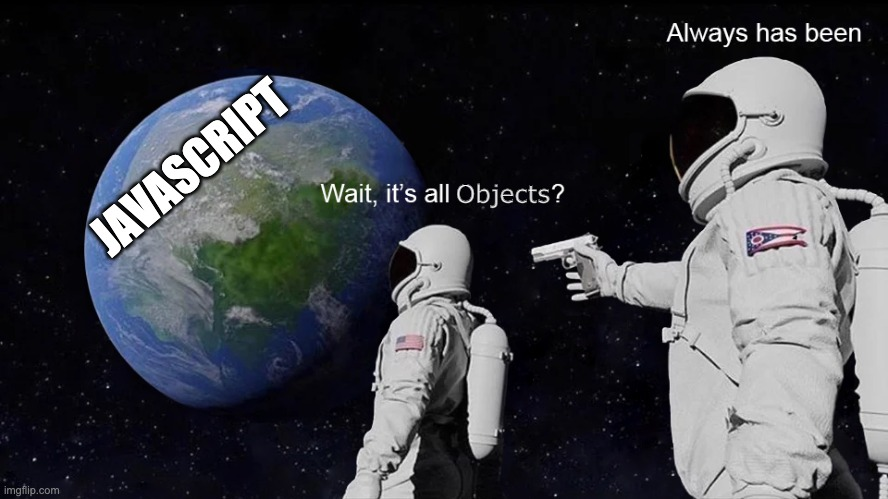

Beginning Our Javascript Journey
It's long and there are many layers
MCC: Section 2
It's long and there are many layers
V8, Spider Monkey, Webkit/Nitro, Chakra(deprecated)
Blink, Webkit, Gecko
Interpreted Languages
Just in time Compilers (JIT) vs. Ahead of time Compliers (AOH)
Low Level vs High Level Languages
Source code, Byte Code, Machine Code, Binary Code 101011
Why all the baggage?
Created in 10 days
Half OOP (Java) & Half FP (Scheme)
Subject of Corporate Fighting
Advanced by contested comittee
ECMAScript is the specification
for the implemented language called Javascript
The Basic Data Types
undefinednullBigIntSymbolNumberBooleanStringUse typeof operator to check types
typeof 100 // 'number'
typeof false // 'boolean'
typeof 'hello' // 'string'
// single line comment
/* Multiline
comment */
nullundefined42, 0, -10, 3.140.1 + 0.2 = ?Infinity, NaNNaN literal.Number.isFinite() - ReferenceNumber.isFinite(42) // true
// returns true for only actual numbers
// that are safe to use in math calculations
Number.isFinite(NaN) // false
Number.isFinite(Infinity) // false
Number.isFinite('42') // false
Number.isFinite(true) // false
// Don't confuse Number.isFinite() with the
// global isFinite(), which coerces the valueBigInt provides arbitray precision & fixes decimal bug in Numbers.
Just post-fix a number with n → 100n
// Adding to the max number overflows & fails
let num = Number.MAX_SAFE_INTEGER + 1
// 9007199254740991
const biggestNumber = 9007199254740991n + 1n
// 9007199254740992n
// BigInt handles it without overflowingthe number type has a maximum allowable value of 9007199254740991
aka Number.MAX_SAFE_INTEGER MDN
true or false
Truthy or Falsey?
Try using console.log() in the dev tools to see it in action:
Boolean(undefined)
Boolean(null)
Boolean("")
Boolean('false')
Boolean('0')
Boolean(0)
let myStr = 'Hello World'
'...' // Single Quotes
"..." // Double Quotes
"It's a string" // Use single or double quotes
'It\'s a string' // Escape special characters with '\'
'Hello' + ' ' + 'World' // 'Hello World' (Concatenation)
"Hello World"[0] // "H" (Bracket Notation)
"Hello".length // 5 (All strings have a length property)
Create Multiline Strings with backticks
` ` (single or multi line)
let myStr = `This is
a fancy
multiline string`
String Interpolation: embed javascript
expressions into string template literals with the ${ } syntax
const myDog = 'Lucky'
const myDogsAge = 8
let myStr = `My dog's name is ${myDog}. She is ${myDogsAge} years old`
// 'My dog's name is Lucky. She is 8 years old'
Immutable vs. Mutable
5 = 4 // Syntax Error
let str = 'hello'
console.log(str[0]) // 'h'
str[0] = 'y' // unable to re-assign immutable value
console.log(str, str[0]) // 'hello', 'h'
(You must reassign to the whole variable
to change a variable's value)
Type Casting
Deliberately alter the type of a value
String(42) // '42'
String(true) // 'true'
Number('42') // 42
Number(false) // 0
Boolean(1) // true
Boolean('') // false
string, boolean, number, etc'1'+ 0 // '10'A variable is a named container for a value, such as a primitive.
The name that refers to a variables is also called an identifier
let
const // constantvar // deprecated
// may find in legacy codelet x // Declaration of an identifier (uninitialized)
let y = 500 // Declaration & Assignment of a value at once
y = 'Hello!' // Re-assignment (overwrites)
const z = 'constant' // Must Declare & Assign a const
const z = 'new value' // SyntaxError (Can't change a const)
🚫let declaration into two stepsDeclaration → then Assignment:
let i
i = true
const j // SyntaxError
const k = 1 // assign only once w/ consistconstWith const you can only assign it once
The variables have names (identifiers)
let x
const y = 'Hello!'
And can contain any Javascript value.
Let's you Declare or Assign multiple vars at once.
let j, k, l;
// j, k, l all initialized as undefined
j = 4, k = 5, l = 6 // all assigned
// or Declare & Assign all at once
const v = 4, x = 3, y = 2, z = 1Scope is like a variables area of influence... it's bounded by curly braces
// the root of a file is the global scope
const global = 'global'
{ // open curly Brace starts a Block Scope
const scoped = 'scoped';
console.log(global) // 'global'
console.log(scoped) // 'scoped'
} // closed curly brace ends Block Scope
console.log(global) // 'global'
console.log(scoped) // ReferenceError: local is undefined
Remember the tree data structure concept?
const global = 'global'
{
let local = 'local';
{
let deeply_nested = 5
console.log(deeply_nested, local, global) // 5 'local' 'global'
}
console.log(deeply_nested) // ReferenceError
}
console.log(deeply_nested) // ReferenceError
These can't be used as variable names: Full List
null true false break do instanceof typeof
case else new var catch finally return void
continue for switch while debugger function
this with default if throw delete in try let
class extends super const export import yield
Variable names must start with a letter, _ or
$
+ - * /
Exponent: **
Remainder: % (aka Modulo)
12 / 3 + 5 - 2 * 3 // 3 (remember PEMDAS?)
10**2 // 100
64**0.5 // 8
20 % 6 // 2 (20/6 = 3.333 -> 0.333*6 = 2)
++--+=-=*=/=
These operations mutate the variable's value
let a = 3;
a++ // a -> 4
a+=6 // a -> 10
a-- // a -> 9
a-=3 // a -> 6
a*=2 // a -> 12
a/=4 // a -> 3Let's get some practice!
Take 15 minutes & try to solve the free challenges here:
Time to practice in the JS console!
"3romans"
// Given:
let str1 = "norse"
let str2 = "man""sold out"
// Given
let str = "hello world"
let bool = truefunction fn(a, b){
// do stuff then
// return something
}
// can be reused by invoking it
fn(1, true) function add(a, b){
return a + b
}
add(1, 2) // 3
add(5, 12) // 17
add(-21, 22) // 1
Use parenthesis to invoke a function
function fn(a){
console.log(a)
}
fn('hello') // Invocation of Function
fn() // If the argument list is empty, then 'a' is undefined
function fn(x, y){
let z = 5;
return (x * y) / z;
}The returned expression is the final value
that your function will evaluate to.
In Javascript, the naming convention used is called Camel Case
Capitalize the first letter of each word, except for the first word
it looks like this:
function camelCaseNaming(){}Similar to Semantic HTML, it's best to
name functions in a semantically helpful way
Some libraries need to convert between these naming conventions
So being consistent is key
/* OK in CSS or file names,
but not in JS */
.kebab-case-naming {
font-size: 2rem;
}// Allowed in JS
function camelCaseNaming(){}
function TitleCaseNaming(){}
// ⤷ aka PascalCaseNaming
function snake_case_naming(){}let z = 10
function fn(x, y) {
console.log(y)
let z = 5; // this z is used below
return (x * y) / z;
}
fn(1, 5) // returns 1 & logs 5
fn(1) // returns NaN & logs undefined A method is simply a function that can be invoked using the dot-syntax (A.K.A "Chaining")
We've already seen this used before:
console.log()
// the `log` function is placed
// within the console "wrapper"
Therefore the log() function exists as a method on the console object
Math.PI // property, not a method
Math.LN10 // property, not a method
Math.round() // method
Math.sin() // method
Math.cos() // method
Math.random() // method
Math.abs() // method
function cylinderVolume(radius, height) {
let radiusSquared = radius ** 2
let circleArea = Math.PI * radiusSquared
let volume = height * circleArea
// round volume to nearest integer & return it
return Math.round(volume)
}String.prototype
let str = 'Example' str.toLowerCase() str.repeat() str.trim() str.indexOf() str.lastIndexOf()str.split() str.substr() str.concat() str.replace() str.charCodeAt() str.includes() str.slice()
console.log(String.prototype) // try this in the console
textStampertext & size as argumentstext as a DOM element at the given pixel sizedocument.body element - MDN.innerHTML property - MDNlet newContent = "New Content"
document.body.innerHTML += newContentHoisting applies differently to these:
fnDeclaration() // works
fnExpression() // TypeError: fnExpression is not a function
function fnDeclaration(){ // Function Declaration
//...
}
let fnExpression = function(){ // Function Expression
//...
}
During the parsing step, the JS Engine traverses .js files twice
A.K.A. Lambda Functions
let fn = function(a, b) {
return a + b
}
// these are equivalent
let fn = (a, b) => {
return a + b;
}let fn = j => {
return j ** 2
}Equivalent to:
let fn = j => j ** 2
// or
let fn = j => (
j ** 2
)() => 100 ** 2
a => 100 ** a
(a) => 100 ** a
(a, b) => b ** afunction fn(args){
// do stuff
}
let func = function(){
// do other stuff
}
fn(func) // Functions can be passed into other functionsDoes the return value of the function depend only on the parameters or internal state?
Think of pure functions
like a black box
no side effects
This will come up later when we get to code organization & architecture.
Non-Mutating vs. Mutating Operations
// Pure Fn
function cylinderVolume(radius, height){
let circleArea = Math.PI * radius ** 2
let volume = circleArea * height
return volume
}let globalValue = 10
// Impure Fn
function sideEffects(arg){
globalValue += arg
return globalValue
}( Think about good names for the function & the parameters )
index.html & index.js file in a new directoryindex.html<script src="index.js"> tag in the <head> as wellMDNindex.js file, write a function with:| Arguments | Return Value |
|---|---|
| numerator, denominator |
logs the fraction & returns the remainder |
| radius | area of that circle (hint: console.log(Math)) |
| °F temperature | the value converted into °C |
Let's also add textStamper to our file, even though it's not a pure function
Something is referentially transparent if its evaluation can always be substituted for the expression itself
let x = 2
function pureFunc() {
let x = 2, y = 100, z = 25
return y / (z * x) // 2
}
pureFunc() // evaluates to 2
x = 4
pureFunc() // still evaluates to 2
let x = 2
function impureFunc() {
y = 100, z = 25
return y / (z * x)
}
pureFunc() // evaluates to 2
x = 4
pureFunc() // now it evaluates to 1
A callback is a function that is not invoked on the window load, but it is invoked by some kind of trigger (like an event) later on
Callbacks are sometimes called "Predicates".
// Using an anonymous function as a Callback
let months = ['March', '', 'Jan', '', 'Feb']
months.filter(a => Boolean(a))
// ['March', 'Jan', 'Feb']
// Using a named function as a Callback
function filterEmpties(a) {
return Boolean(a)
}
months.filter(filterEmpties)Arrays are list-like objects that use square brackets
[ 'a', 'man', 'a', 'plan', 'a', 'canal', 'panama' ]They can hold any number of different values (Primitives or Objects):
[ 2, null, 'abc', {key: 'value'}, ['nested', 'array'] ]They have built-in methods to perform list traversal & value mutation.
The recommended way to create arrays is declaring an array literal:
let arr = [1, 2, 3] // this is an array literal
Other uncommon options to create Arrays:
// Array constructor
let arr = new Array(1, 2, 3, 4) // [1, 2, 3, 4]
arr = new Array(2) // [undefined, undefined]
// Array Methods:
arr = Array.of(1, 2, 3) // [1, 2, 3]
arr = Array.from('str') // ["s", "t", "r"]
let str = 'Hello!'
str.length = 3
str.length // 6
str[2] = 'a' // str is still 'Hello'↑ But Strings are immutable, unlike Arrays ↓
let arr = ['H','e','l','l','o','!']
arr[0] // 'H'
arr.length // 6
arr.length = 3
console.log(arr) // ['H','e','l']Arrays are zero-indexed & the indices must be integers
let arr = [1, 2, 3]
arr[0] // 1
arr[1] // 2
arr[2] // 3
arr[2] = 0 // assignment mutates an array index
arr[2] // 0
console.log(arr[3]) // undefined
arr[4] = 'ten'
console.log(arr) // [1, 2, 0, undefined, "ten"]let arr = [1, 2, 3]
arr.length // length is 3
arr[arr.length] // value at index 3 is undefined
arr[arr.length - 1] // value at index 2 is 3
arr.length = 2; // assignment to length mutates array
console.log(arr) // [1, 2]index.js file from earlier| Arguments | Return Value |
|---|---|
| Temperature (F or C), a "flag" arg (that is either 0 or 1) |
if "flag" is 0, converts from F -> C if "flag" is 1, converts from C -> F |
Hint: Use the "flag" to access one of two positions in an array that holds two expressions
Array.prototype
Challenge: use Javascript.info or MDN to discover what each of these do:
let arr = [1,2,3]
Array.isArray(arr) // true
arr.includes(1) // true
arr.indexOf(3) // 2
arr.at(-1) // 3
arr.concat(4) // [1, 2, 3, 4]
arr.slice(1) // [2, 3]
arr.push()
arr.pop()
arr.shift() // converse of .pop()
arr.unshift() // converse of .push()
arr.flat()
arr.toSorted()
arr.toSpliced()The Functional Programming style prefers non-mutating techniques
Let's make a simple Todo List interface in VS Code!
textStamper? .join()! // logical NOT
!! // Double Bang!
!true // false
!!0 // false - think same as Boolean(0)
&& // logical AND
|| // logical OR
?? // Nullish Coalescer
true && false // false
true && true // true
2 && 3 // 3
true || false // true
0 || 5 // 5
'' || 'hello' // 'hello'
null ?? false // false
false ?? true // false> // Greater Than
>= // Greater Than or Equal
< // Less Than
<= // Less Than or Equal
10 > 5 // true
5 <= 5 // true=== // Strict Equality
!== // Strict Inequality
2 === 2 // true
2 === '2' // false
undefined !== null // true??
Returns the second operand, only if the first is nullish:
null, undefined
null ?? 42 // 42
undefined ?? 42 // 42
'' ?? 42 // ''
0 ?? 42 // 0
false ?? 42 // falseJavascript does have a bitwise XOR which uses the ^ (caret) symbol.
Bitwise or Binary Exclusive OR: Two inputs of opposite truthiness result in 1
and if they are the same truthiness they result in 0
It only operates on binary characters (zero/one or true/false). Also works with null, undefined
Results can be unexpected if the inputs are strings, non-binary numbers or other data structures (i.e. arrays)
1 ^ 0 // 1
1 ^ 1 // 0
true ^ null // 1
let foo = 'string', bar = false
( foo && !bar ) || ( !foo && bar ) // true
!!foo != !!bar
foo ? !bar : !!bar // true
// Using bitwise XOR - you must coerce to booleans first
Boolean(foo) ^ Boolean(bar) // 1
!!foo ^ !!bar // 1
!!bar ^ !!bar // 0
Recommended to package it in a reusable function:
function XOR(a, b) {
return Boolean(!!a ^ !!b)
}// Strict Equality means
// type equality too
0 === '0' // false
0n === 0 // false
'0' === false // false
false === 0n // false
// Loose Equality uses truthiness
// & attempts to coerce values
0 == '0' // true
0n == 0 // true
'0' == 0n // true
'0' == false // true
0 == null // false
'0' == null // false
false == null // false
'0' == undefined // false
false == undefined // falseMyVar || 'default value'Take 10 minutes and try to solve the free challenges here:
let input = 0
if (input < -1) {
// do this
} else if (input > 1) {
// or do this
} else if (input !== 0) {
// or do something else
} else {
// otherwise do that
}Take 5 minutes & try to solve the free challenges here:
A more concise way to express simple if/else conditions
let input = 0
let result;
result = input ? 'input was truthy!' : 'input was falsey!'
console.log(result) // 'input was falsey'
Try not to nest ternary operators... it works but it can get hard to read.
let input = 0
let condition = true
input ? 'input was truthy!'
: condition ? 'condition was truthy'
: 'input & condition were falsey!'The break statement is optional.
You could also use a return statement
(instead of break)
break or return will lead to let input = 'Hello'
switch(typeof input){
case 'number':
//do this
break
case 'boolean':
// do that
break
case 'string':
console.log(input)
break
default:
// do another thing
break
}temperatureConverter to use an:temperatureConverter requirements:| Arguments | Return Value |
|---|---|
| Temperature (F or C), a "flag" arg (that is either 0 or 1) |
if "flag" is 0, converts from F -> C if "flag" is 1, converts from C -> F |
let arr = [1,2,3,4,5]
for(let i = 0; i < arr.length; i++){
console.log(arr[i])
}let arr = [1,2,3,4,5]
for(let i = 0; i < arr.length; i++){
console.log(arr[i])
}let arr = [1,2,3,4,5]
for(let i = 0; i < arr.length; i++){
console.log(arr[i])
}You're responsible for
how the condition changes
let arr = [1,2,3,4,5]
let i = 0 // you set this up
while(i < arr.length) {
console.log(arr[i])
i++ // and you increment it
}
Example use case:
let playing = true
while(playing) {
// game loop calculations
if(events.includes('quit')) {
playing = false
}
}Same as while loops,
but the condition is checked after
let arr = [1,2,3,4,5]
let i = 0;
do {
i = i + 1;
result = result + i;
} while (i < arr.length)( They'll crash your browser )
const you_are_out = true
let milk = 0
let money = 500
function buy_some_milk () {
money--
milk++
}
while (you_are_out) {
buy_some_milk()
}Arrays have a built in method called forEach()
let arr = [1, 2, 3, 4]
let callback = i => console.log(i)
array.forEach(callback)
// logs each value in `arr` on a new line
Let's combine our textStamper with a looping function
textStamper to add the text to the DOM<li>These are non-mutating methods.
All of them take a callback function to customize their behavior.
let arr = [5, 4, 3, 2, 1, 0]
arr.find(i => i < 4) // return first matching element
arr.findIndex(i => i < 4) // returns the index of the first matching element
arr.some(i => i < 4) // returns true if condition is met at least once
arr.every(i => i < 4) // returns true only if condition is met for all
Non-mutating & pass in a callback
Returns a transformed copy of the array (Except reduce)
let arr = [2, 3, 4]
arr.map(i => i**2) // [4, 9, 16]
arr.filter(i => i%2 === 0) // [2, 4]
arr.reduce((sum, next) => sum + next, 0) // 9
let nestedArr = [1, [2, 3, 4]]
nestedArr.flatMap(i => i) // [1, 2, 3, 4]
.map()Transforms each item in an array
Always returns an array of the same length
let arr = [1,2,3]
let squares = arr.map(i => i**2)
console.log(squares) // [1,4,9]
console.log(arr) // [1,2,3]
.filter()Removes elements from array when the callback does not return true
Always returns an array of the equal or lesser length
[1,2,3,4].filter(i => i > 2) // [3,4]
let arr = ['a', 0, 'b', null, 'c', false]
arr.filter(Boolean) // ['a', 'b', 'c'].reduce() & .reduceRight()The callback loops over all array items & reduces them down to one final value called the accumulator
Always returns a single output value.
let arr = [0, 1, 2, 3, 4]
arr.reduce((accumulator, currentValue) => {
return accumulator + currentValue
}, 0)
// .reduceRight starts from the end & works leftward
arr.reduceRight((acc, cur) => {
return acc.concat(cur)
}, [])[3, 4, 5, 6].reduce((accumulator, currentValue, currentIndex) => {
return accumulator + currentValue
}, 0)| iteration | currentIndex | accumulator | currentValue | return value |
|---|---|---|---|---|
| 1st loop | 0 | 0 | 3 | 3 |
| 2nd loop | 1 | 3 | 4 | 7 |
| 3rd loop | 2 | 7 | 5 | 12 |
| 4th loop | 3 | 12 | 6 | 18 |
.flatMap()Works just like .map(), but also flattens the array by one level
let arr = [1, 2, 3, 4];
arr.flatMap(x => [x, x * 2]); // [1, 2, 2, 4, 3, 6, 4, 8]
let arr2 = [[1,2], [2,3], [3,4]]
arr2.flatMap(x => x) // [1, 2, 2, 3, 3, 4]Jump into VSCode & Copy the starter code from here:
Then let's try to solve each one!
Take 15 minutes & try to solve the free challenges here:
let obj = {
key: 'value', // key (not index)
"aka property": 2, // Use double quotes for multi-word keys
key2: [1, 2, 3], // holds any data type
key3: { key: ' nested value' }, // even nested objects
key4: function(a, b) { console.log('method') }, // trailing comma
// ⤴ Functions on an object are called methods
}Dot Notation & Bracket Notation
let myAccess = "key"
obj.key // 'value'
obj["key"] // value
obj[myAccess] // value
obj["aka property"] // 2
obj.key2[0] // 1
obj.key3.key // 'nested value'
obj.key4(a, b) // invokes key3 methodThe old "Guard"
New in ES6+
// Logical And ('&&') as a 'Guard'
obj && obj.key
obj && obj.key3 && obj.key3.key
// hasOwnProperty Method
obj.hasOwnProperty('key') // true// Optional Chaining Operator
obj?.key3?.key
// the 'in' keyword:
'key' in obj // true
'fake' in obj // false
?.
let obj = { key: { maybe: { nested: 1} } }
obj.key.maybenot.nested // Throws an error
obj.key.maybenot?.nested // Evaluates to `undefined`
obj?.key?.maybenot?.nested // Chain multiple for full safety
let obj = new Object // {}
obj.key = 'value' // must populate keys manuallythis keyword MDN
/ W3const person = {
name: 'Chris',
greet: function() {
alert('Hello ' + this.name + ', Welcome!');
},
lambdaGreet1: () => { // `this` is undefined
alert('Hello ' + this.name + ' Welcome!');
},
lambdaGreet2: () => {
alert('Hello ' + person.name + ' Welcome!');
}
}Lexical Scoping: Arrow functions do not bind a value to this. They will take
the Window value for this.
Object.create()
const person = {
isHuman: true,
greet:() => console.log(`Hello there!`);
};
const me = Object.create(person);
me.name = "Scooby Doo";
// "name" is a property set on "me", but not on "person"
me.isHuman = false;
// inherited properties can be overwritten
me.greet() // 'Hello there!'Object.assign()
This overwrites the target object and avoids inheritance
const target = { a: 1, b: 2 };
const source = { b: 4, c: 5 };
const returnedTarget = Object.assign(target, source);
console.log(target);// Object { a: 1, b: 4, c: 5 }
console.log(returnedTarget);// Object { a: 1, b: 4, c: 5 }Objects (& Functions, Arrays) are passed by Reference
Primitives are passed by Value
let obj = { key: 'value' }
let another = obj
another.test = 'same object in memory'
console.log(obj) // {key: 'value', test: 'same object in memory'}.assign()Recall Mutating vs. Non-Mutating Operations (creating a copy)
This will avoid the potential collisions due to passing by Reference
const obj = {name: 'Jamie', isHuman: true};
const uniqueObj = Object.assign({}, obj)
// now there are two separate objects in memory
// each with the same propertiesNote: this creates a shallow copy (omits deeply nested properties)
for deep copies of objects use structuredClone()
const myObj = {
num: 5,
nested: [1, 2, 3]
}
const shallowClone = Object.assign({}, myObj)
const deepClone = structuredClone(myObj)
deepClone.push(4)
console.log(deepClone.nested) // [1, 2, 3, 4]
console.log(myObj.nested) // [1, 2, 3]
shallowClone.nested.push(4) // mutates the original object
console.log(myObj.nested) // [1, 2, 3, 4]
let obj = { key: 'value' }
obj.prop = 1 // add a new key-value pair
obj.key = 5 // change an existing value
console.log(obj) // {key: 5, prop: 1}
delete obj.key // delete a key-value pair
console.log(obj) // {prop: 1}The For...in Loop (Does not garauntee order)
const object = {a: 1, b: 2, c: 3};
for (const property in object) {
console.log(`${property}: ${object[property]}`);
}
// "a: 1"
// "b: 2"
// "c: 3"Often it's easier to manipulate Objects as arrays (and then turn it back afterwards)
const obj = {a: 1, b: 2, c: 3};
Object.entries(obj) // [['a', 1],['b', 2],['c', 3]]
Object.keys(obj) // ['a', 'b', 'c']
Object.values(obj) // [1, 2, 3]
// Reverse the process:
Object.fromEntries([['a', 1],['b', 2],['c', 3]]) //{a: 1, b: 2, c: 3}Take 10 minutes & try to solve the free challenges here:
const inventory = [
{ name: "spinach", type: "vegetable", quantity: 5 },
{ name: "bananas", type: "fruit", quantity: 0 },
{ name: "almond", type: "nut", quantity: 23 },
{ name: "cherries", type: "fruit", quantity: 5 },
{ name: "pistachio", type: "nut", quantity: 22 },
]
// call it w an array & a callback fn that returns a string
const result = Object.groupBy(inventory,({ type }) => type)
console.log(result){ // returns:
vegetable: [
{ name: 'spinach', type: 'vegetable', quantity: 5 },
],
fruit: [
{ name: "bananas", type: "fruit", quantity: 0 },
{ name: "cherries", type: "fruit", quantity: 5 }
],
nut: [
{ name: "almond", type: "nut", quantity: 23 },
{ name: "pistachio", type: "nut", quantity: 22 }
]
}Making an object read-only has some "gotchas"
const obj = {key: 'value'}
obj.key = 3 // this works
obj = {name: 'new'} // Throws Error
Object.seal(obj)
Object.freeze(obj)Object.seal()
Prevents deletion of properties
const obj = {prop: 2 };
Object.seal(obj);
// can mutate a sealed object's existing properties
obj.prop = 3;
console.log(obj.prop);// 3
// cannot delete when sealed
delete obj.prop;
// cannot add new properties
obj.greet = 'hello'
console.log(obj.prop, obj.greet);// 3, undefinedObject.freeze()
Prevents deletion and alteration of properties. But only on 1st level of nesting
const obj = {prop: 2, key: {greet: 'hello'}};
Object.freeze(obj);
// cannot mutate nor delete a frozen object
obj.prop = 3;
obj.greet = 'hello'
delete obj.prop
console.log(obj)
// {prop: 2, key: {greet: 'hello'}}
// But freezing is "shallow"
obj.key.greet = 'Aloha'
console.log(obj)
// {prop: 2, key: {greet: 'Aloha'}}This is not a native JS function. You have to write it yourself. But here is an implementation we can use: Github
function deepFreeze (o) {
Object.freeze(o);
Object.getOwnPropertyNames(o).forEach(prop => {
if (o.hasOwnProperty(prop)
&& o[prop] !== null
&& (typeof o[prop] === "object"
|| typeof o[prop] === "function")
&& !Object.isFrozen(o[prop])) {
deepFreeze(o[prop]);
}
});
return o;
};We've been using Objects this whole time!
Everything is an inspectable object, except null, undefined.
(null is
kind of an object though, it's complicated)
Even Primitives can access their prototype's methods, because they're implicitly wrapped by an Object - autoboxing
String.prototype
Number.prototype
Boolean.prototype
Symbol.prototype
BigInt.prototype
Array.prototype
Object.prototype
Function.prototype // no methods/properties of its ownSymbol()
let Sym = Symbol("Sym");
console.log(_Sym.description);// Add useful toString Method to js objects:
Object.prototype.toString = function() {
return JSON.stringify(this)
}This can lead to naming collisions with other libraries
This is what Symbol is for!! So use it if you must do this.
// toString path with `Symbol`:
const toString = Symbol('toString')
Object.prototype[toString] = function() {
return JSON.stringify(this)
}
{a: 1, b: 2}[toString]() // "{\"a\":1,\"b\":2}"prototypesUsing Symbol for safe global prototypal inheritance
const serialize = Symbol('serialize');
Boolean.prototype[serialize] = Number.prototype[serialize] = String.prototype[serialize] =
function() { return JSON.stringify(this) }
Function.prototype[serialize] = function() { return this.toString() }
Array.prototype[serialize] = function() {
const values = this.map(item => item[serialize]()).join(', ')
return '['+values+']'
};
Object.prototype[serialize] = function() {
const properties = Object.entries( this ).map(
entry => entry[0][serialize]() +': '+ entry[1][serialize]()
)
return '{'+properties+'}'
};
RegExp.prototype[serialize] = function() { return '/'+this.source+'/'+this.flags }ValidateJavascript.com (can choose linting rules)